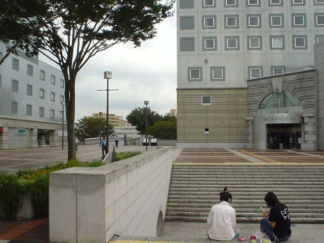

ペデ上の警官たち

撮影日時: 2003-08-20 12:19:58
皇太子夫妻が来筑（エポカルの国際会議に出席）ということで、警官が大勢いました。さすがに警官の目の前でパチリとやる勇気が無かったので、ちょっと弱腰に遠目のショット。
センターの前あたりだけでも大体 5、6 組の警官がいました。エポカルに通じる道では、交差点毎に警官が立ってました。
普段からペデ上に警官の姿があると、治安も良くなるのにね…。
高久雅生 (Takaku Masao)
http://nile.ulis.ac.jp/~masao/,
masao@ulis.ac.jp